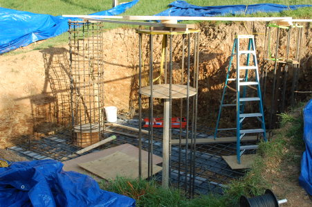
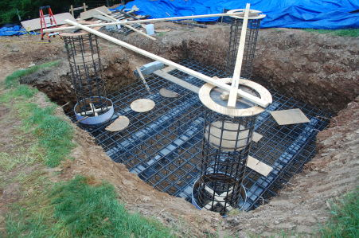
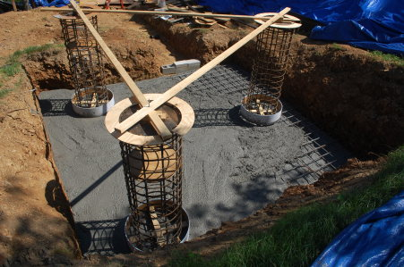
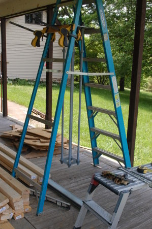
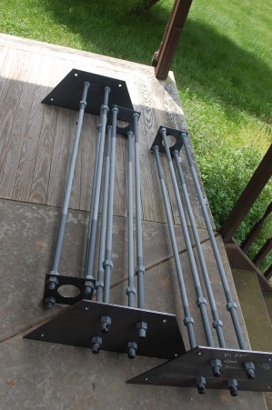
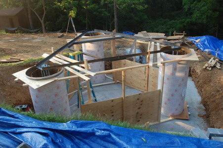
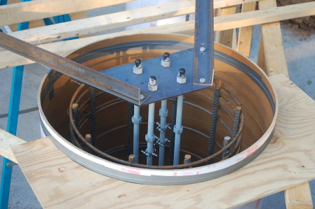
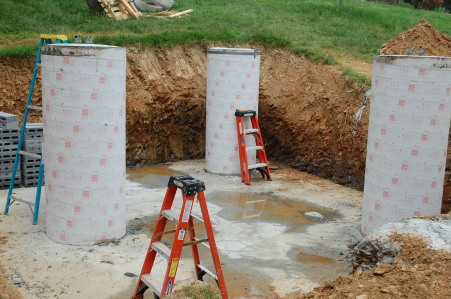

|
Home About VSI What We Do Who We Are Contact Info Resources Blog Data Archives Export |
Tower ConstructionFoundation Concrete Placement
The foundation concrete was poured in two steps; first the square mat in the very bottom of the excavation, then
the three piers extending up from the mat to just above grade. A total of 31 cubic yards of concrete was used.
Mat   The mat was poured first. Note the three Sonotube rings suspended at the bottom of the piers, just where the bottom edge of the full Sonotube forms would go. That was to create a circular indentation in the mat concrete. The bottom edge of the Sonotube rings was built up with several layers of duct tape, to be sure the full pieces of Sonotube would fit. After the mat was poured the remaining rebar rings were installed on the pier cages and sonotube dropped over the rebar cages. Each Sonotube form weighed over a hundred pounds and was over seven feet tall, so placing them over the rebar cages was easier said than done. Fortunately I had my brother and two neighbors to help. That would have been an interesting exercise with only two people. Anchor Bolts and Template  Next the anchor bolt assemblies were assembled. Each assembly consists of four anchor bolts, held top and bottom by metal plates. The complete assembly was rather heavy so a little ingenuity with a stepladder was necessary to bolt them together straight and true. The tolerance on the placement of the anchor bolts was very tight; only 1/8". It would be a major disappointment to assemble the tower on the ground, pay to have a crane and tower climbing crew on hand, only to discover that the tower base wouldn't bolt to the foundation anchor bolts. To minimize that risk I purchased the optional anchor bolt template from the tower manufacturer. That template consists of a giant triangle that holds each anchor bolt assembly in the proper location. The template weights several hundred pounds, so we built a temporary scaffold out of 2x4 lumber and plywood.  Pouring the Piers After all that work building the scaffolding and assembling the template, the pouring of the concrete in the piers was uneventful. I asked the concrete supplier, TBH, for my favorite driver (also named Steve), as he was the only one of several concrete truck drivers I asked who had any confidence in being able to pour from the truck chute directly into the pier forms, with the necessity of building a chute out of lumber and plywood. Steve obviously knew what he was doing. He backup his truck up to each pier to exactly the right place on the first try each time. To reach the most inacessible pier, the easter one on the far side of the foundation, he had the outermost tire on his rear axle axle hanging over the edge of the excavation. Thanks, Steve, you saved me a lot of work.After a couple of days to make sure the concrete set up properly I disassembled and removed the template and stripped the scaffolding. |
|
|